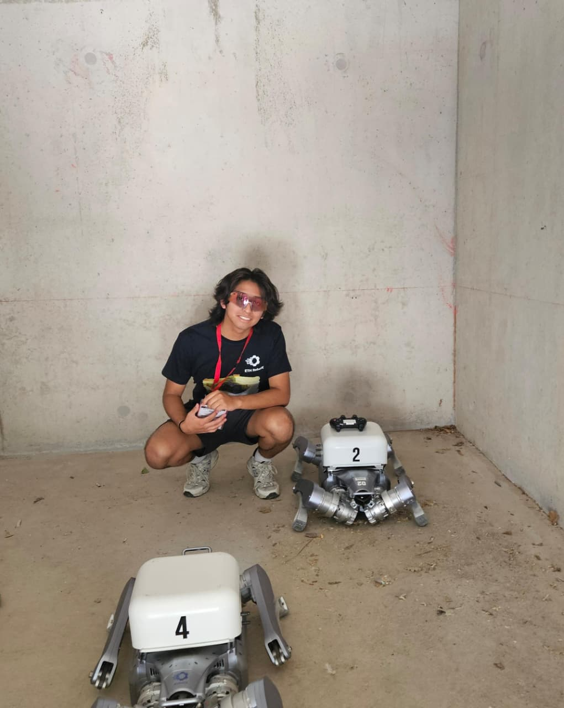

Legged robotics research with the RSL team.

Robotics Student Fellow at the Robotic Systems Lab, ETH Zürich. I build controllers and low-cost hardware for legs that walk in the real world, not just in simulation.
The real URDF of the A2, rendered in 3D and driven by /joint_states trajectories extracted directly from my own test rosbags. This is not a live physics simulation. It is an honest replay of motion that actually happened.
Education, research and projects in legged robotics.
Legged robotics research with the RSL team.
One of 50 students worldwide invited to a week combining robotics theory with hands-on programming of autonomous, all-terrain quadruped robots, culminating in a search-and-rescue competition.
Bipedal robot inspired by Disney's BDX robot.
Awarded for FreeWheels, an intuitive-control wheelchair for athletes.
Recognized for the project with the greatest potential impact on smart urban environments.
Bachelor's degree.
Software and control for legged robots, from low-cost hardware to applied research.
Autonomous bipedal delivery robot. Capture-point walking control from the push-recovery literature, implemented as a fault-tolerant ROS 2 "constellation" of nodes. Python · ROS 2 · MuJoCo · Pinocchio.
Intuitive-control wheelchair for athletes. 2nd place, IROS 2025 (Volting Cup), China. Winner, Smart City Challenge.
Bipedal robot inspired by Disney's BDX robot, developed at IEEE Robotics & Automation Society UTEC. Leading the project as Director de Proyecto.
The same policy twice: Isaac Lab on the left, the real A2 on the right, running it in the lab yard. This is the session the joint trajectories on this page come from.
Full record of education, experience and skills.
Robotics Student Fellow @ RSL, ETH Zürich. Legged locomotion, sim-to-real RL, low-cost hardware.